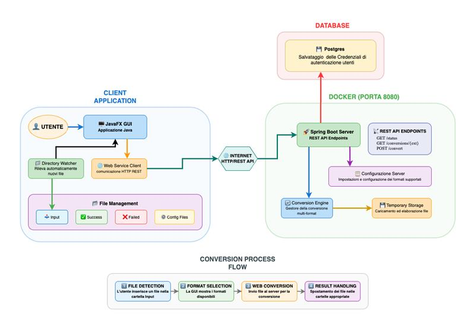

Documentation - ByteBridge
Introduzione
Il progetto prevede un'applicazione lato client che riceve i file, permette all'utente di impostare le opzioni per la conversione e li invia ad un server che espone un servizio do conversione.
Architetura

Lato client
L'applicazione prevede un servizio che monitora una cartella in modo da rilevare quando viene aggiunto un file.
La cartella monitorata, quelle di destinazione e altri parametri utili possono essere modificati dall'utente tramite apposite finestre.
In caso di conversione riuscita il file originale rimane nella cartella monitorata e il risultato viene salvato in una differente, destinata ai file convertiti.
L'estensione del file convertito viene individuata automaticamente in base al MediaType inviato dal server dell'header della risposta.
In caso di conversione fallita il file originale viene spostato dalla cartella monitorata a quella dedicata alle operazioni fallite.
Lato server
Il server espone un servizio di conversione gestito da un motore centrale.
La conversione avviene appoggiandosi su una cartella temporanea che viene eliminata al termine delle operazioni.
Il motore centrale si occupa di individuare il convertitore da utilizzare e il tipo di conversione utilizzare (singola o multipla in caso di cartelle compresse).
Classi lato server
ConverterWebServiceController.java
Controller REST Spring Boot che espone API per conversioni file via web service.
Funzioni principali:
getStatus()
- Endpoint: GET
/api/webService.client.objects/status. - Funzione: Verifica che il web service sia attivo.
- Ritorna: JSON con
{"status": "active"}.
getPossibleConversions(@PathVariable String extension)
- Endpoint: GET
/api/webService.client.objects/conversions/{extension}. - Funzione: Restituisce i formati di destinazione disponibili per una data estensione.
- Input: Estensione file (es. "pdf").
- Output: Lista di estensioni supportate per la conversione.
convertFile()
- Endpoint: POST
/api/webService.client.objects/convert. - Funzione: Converte un file caricato nel formato richiesto.
- Parametri:
file: File da convertire (MultipartFile).targetFormat: Formato di destinazione.configFile: File di configurazione con parametri utili alla conversione.
Flusso tipico di utilizzo:
- Crea directory temporanea univoca con UUID.
- Salva il file di configurazione nella directory temporanea.
- Salva il file caricato nella directory temporanea.
- Chiama
EngineWebServiceper la conversione effettiva. - Legge il file convertito e lo restituisce come array di byte.
- Pulisce automaticamente tutti i file temporanei nel
finally.
EngineWebService.java
Motore centrale di conversione che individua automaticamente il convertitore da usare e il tipo di conversione da effettuare (singola o multipla in caso di cartelle compresse).
Funzioni principali:
getPossibleConversions(String extension)
- Consulta il file serverConfig.json per determinare i formati di destinazione disponibili.
- Restituisce la lista di estensioni supportate per la conversione.
conversioneSingola(srcExt, outExt, srcFile, outputDirectory)
- Istanzia il convertitore corretto sulla base dei formati di partenza e destinazione.
- Elimina il file temporaneo al termine della conversione.
conversioneMultipla(srcExt, outExt, srcFile, outputDirectory)
- Decomprime la cartella compressa.
- Chiama
conversioneSingolaper ciascuno dei file.
conversioneMultipla(srcExt, outExt, srcFile, outputDirectory)
-
Legge dal file conversionContext.json se è abilitata la conversione multipla.
-
Individua se eseguire una conversione singola o una conversione multipla.
Classi lato client
ConverterWebServiceClient.java
Client per comunicare con il web service da applicazioni esterne.
Funzioni principali:
isServiceAvailable()
- Testa la connettività al web service.
- Chiama l'endpoint
/statuse verifica la risposta. - Gestisce eccezioni di rete e timeout.
getPossibleConversions(String extension)
- Richiede al web service i formati disponibili per una estensione.
- Converte la risposta da array a
List<String>. - Gestisce errori HTTP e di rete.
convertFile()
-
Verifica disponibilità servizio
-
Prepara richiesta multipart con file e parametri.
-
Esegue POST al web serviceRiceve array di byte del file convertito.
-
Salva il file localmente nel percorso specificato.
-
Gestione errori completa: Errori HTTP, di rete, I/O.
-
Ritorna
ConversionResultcon stato e messaggio.
ConversionResult.java
Classe per incapsulare il risultato di una conversione.
Proprietà:
success: Boolean che indica successo/fallimento.message: Messaggio descrittivo per successi.error: Messaggio di errore dettagliato.
DirectoryWatcher.java
Fornisce un servizio di monitoraggio su una cartella
Funzioni principali:
registerAll(Path start)
-
Effettua un controllo ricorsivo su tutte le sottocartelle a partire da quella passata come parametro.
-
Registra in una mappa Il path di ciascuna cartella associato ad una
WatchKey
MainViewController.java
Controller principale della GUI dell'applicazione.
Funzioni principali:
launchDialogConversion(File srcFile)
- Funzione chiamata quando viene rilevato un nuovo file.
- Chiede al server i formati disponibili per la conversione.
- Mostra un dialog per selezione formato.
- Fa una chiamata
POSTal server per effettuare la conversione.
openConfigurationWindow() / openConversionConfigurationWindow()
- Aprono finestre per modificare rispettivamente i file config.json e conversionConfig.json.
- Sono associati a controller che modificano i file json e ricaricano le rispettive mappe condivise.
Limiti
PDF: max 27 pagine.
File generici: max 100 MB.